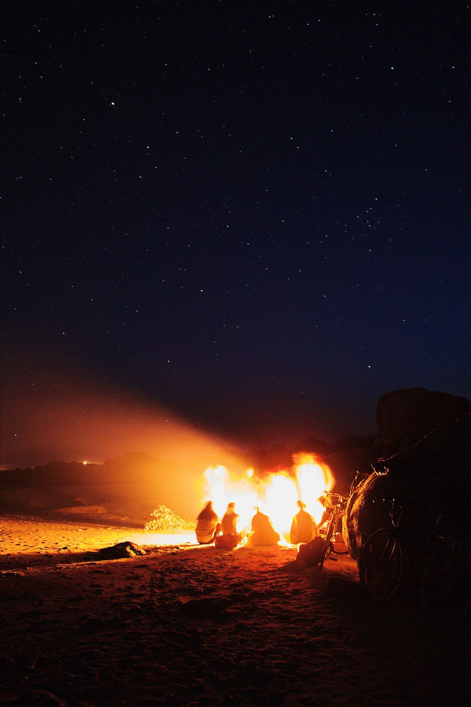

תמונה להמחשה
תמונה להמחשה
תמונה להמחשהלב מדבר
מעגלי דיבור והקשבה: יושבים במעגל, אחד מדבר וכולם מקשיבים. מקום לדבר מהלב ולהקשיב מהלב, בקבוצות קטנות.
אני רוצה להצטרףיושבים במעגל. במרכז נר וחפץ דיבור. מי שמחזיק את החפץ מדבר, וכולם מקשיבים. אין עצות ואין שיפוטים, ואין חובה לדבר: תמיד אפשר לומר ״אני עובר״.
לספר מה חי בתוכי, בגוף ראשון, בלי להסביר ובלי להתגונן.
להקשיב עד הסוף, בלי להכין תשובה בזמן שהאחר מדבר.
מעט מילים, ונכונות. מה שחשוב באמת.
מה שעולה כאן ועכשיו, לא מה שהכנתי מראש.
המפגשים הראשונים הם פנים אל פנים, בקבוצות קטנות. אונליין יתאפשר בהמשך.
ערב של דיבור והקשבה, לכל מי שרוצה להיות חלק.
מרחב בין גברים: כנות, שקט ואחווה.
מפגש ממוקד סביב נושא אחד, עם תרגילים מהמסורת של מעגל ההקשבה.
שיחה אחד על אחד, בקצב שלך.
המעגל הקרוב: יום רביעי, 6 בינואר 2027. השאירו פרטים ונעדכן אתכם עם כל הפרטים.
תמונה להמחשה
שמי גארי. אני לומד הנחיית מעגלי הקשבה בהכשרת ״הלב השומע״, ומנחה מעגלי תפילה ושירה קדושה סביב האש. המעגלים הראשונים שלי הם בתרומה חופשית (דאנה), כי אנחנו לומדים יחד. אני לא מומחה שיושב מול שולחן: אני יושב איתכם במעגל.
אין חובה לדבר: תמיד אפשר לומר ״אני עובר״.
יושבים במעגל. במרכז נר וחפץ דיבור. מי שמחזיק את החפץ מדבר, וכולם מקשיבים. אין עצות ואין שיפוטים.
המעגלים הראשונים בתרומה חופשית (דאנה), כי אנחנו לומדים יחד.
המפגשים אינם טיפול ואינם תחליף לטיפול.
המפגשים הראשונים הם פנים אל פנים, בקבוצות קטנות. אונליין יתאפשר בהמשך.
שלחו לי הודעה עם השם והמעגל שמעניין אתכם, ואחזור אליכם עם התאריך הקרוב. אני לא שולח שום דבר אחר.
אני רוצה להצטרף